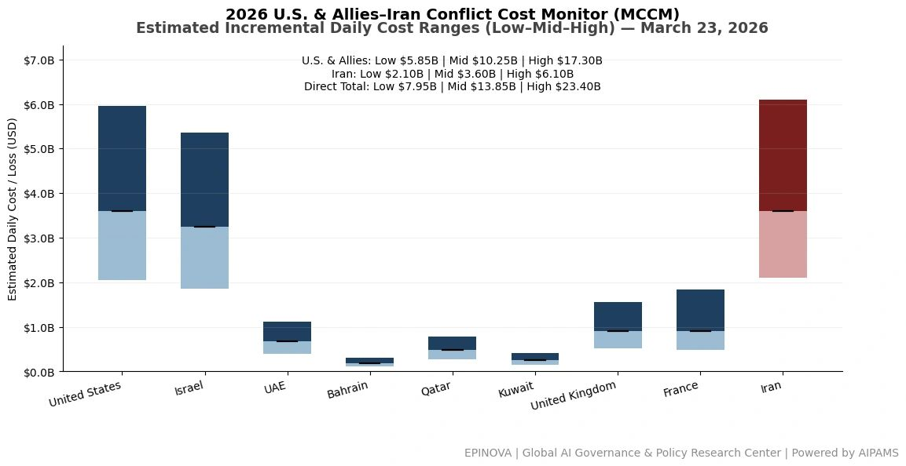
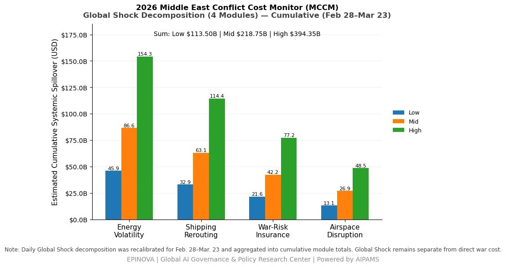
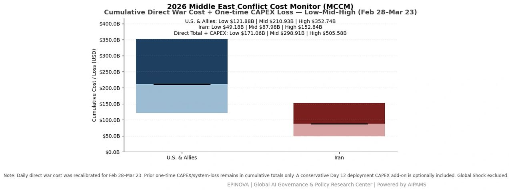
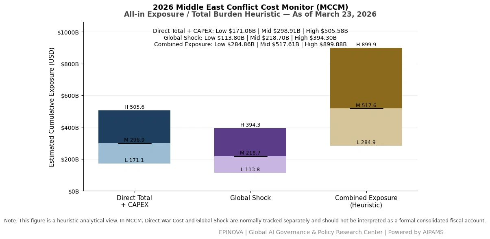

2026 U.S. & Allies–Iran Conflict Cost Monitor (MCCM): March 23
Powered by AIPAMS
1. Introduction
The 2026 Middle East Conflict Cost Monitor (MCCM) provides an event-driven, scenario-based assessment of daily conflict-related expenditures and losses across major state actors involved in the crisis. Using a structured low–mid–high estimation framework, the series aggregates publicly available operational indicators, force posture changes, strike intensity proxies, reported material damage, and infrastructure disruptions to produce comparable daily cost ranges.
The MCCM framework distinguishes between three analytical components:
(1) Direct War Cost, which includes military operational expenditures, asset losses, and selected capital losses (CAPEX);
(2) Infrastructure and energy-sector disruption costs linked to conflict operations; and
(3) Systemic market spillovers (“Global Shock”), which capture broader economic and logistical externalities associated with regional escalation.
Direct war costs and systemic spillovers are reported separately to maintain analytical clarity between conflict-specific expenditures and wider economic effects.
MCCM is designed as a rolling monitoring instrument rather than a definitive accounting ledger. Estimates are produced using scenario-bounded ranges intended to support comparative analysis and policy discussion rather than precise fiscal accounting. All values are expressed in current U.S. dollars (USD) and may be revised retroactively as verification improves and additional information becomes available.




2. Methodological Notes
A. Scenario Ranges.
All estimates are presented as bounded ranges.
- Low: Minimum confirmed observable losses.
- Mid: Most probable estimate based on publicly available reporting and operational cost parameters.
- High: Upper-bound scenario incorporating reported but not independently verified high-value asset losses.
B. Daily Estimates.
Reported figures represent incremental 24-hour estimates of conflict-related costs and losses.
C. Cumulative Totals.
Cumulative values reflect the aggregation of daily scenario ranges over the reporting period. High-range values may include scenario-based adjustments for reported strategic asset losses pending independent verification.
D. Global Shock.
Global Shock represents systemic economic spillovers generated by the conflict and is reported separately from direct military costs. It is decomposed into four modules:
- Energy Volatility
- Shipping Rerouting
- War-Risk Insurance Premiums
- Airspace Disruption
These modules capture major economic and logistical externalities associated with regional escalation.
E. Combined Exposure (Heuristic).
In selected figures, Direct War Cost and Global Shock may be displayed together as a Combined Exposure heuristic to illustrate the approximate scale of total economic exposure associated with the conflict. This aggregation is analytical only and should not be interpreted as a formal consolidated fiscal account.
F. Revision Policy.
All MCCM estimates are derived from open-source reporting and model-based reconstruction and remain subject to revision as verification improves.
Selected References:
Reuters. (2026, March 23). Trump postpones military strikes on Iranian power plants. https://www.reuters.com/world/trump-postpones-military-strikes-iranian-power-plants-2026-03-23/
Reuters. (2026, March 23). Iran threatens to retaliate against Gulf energy and water facilities after Trump ultimatum. https://www.reuters.com/world/middle-east/iran-threatens-retaliate-against-gulf-energy-water-after-trump-ultimatum-2026-03-23/
Reuters. (2026, March 23). Israeli military says it is conducting strikes in Tehran. https://www.reuters.com/world/middle-east/israeli-military-says-it-is-conducting-strikes-tehran-2026-03-23/
Reuters. (2026, March 23). Israel signals possible expansion of operations in southern Lebanon. https://www.reuters.com/world/middle-east/israeli-minister-calls-annexation-southern-lebanon-2026-03-23/
Reuters. (2026, March 19). Greek-operated air defence system shoots down Iranian missiles over Saudi Arabia. https://www.reuters.com/business/aerospace-defense/greek-operated-air-defence-system-shoots-down-iranian-missiles-over-saudi-2026-03-19/
Reuters. (2026, March 16). Trump weighs seizing Iran’s Kharg Island oil hub amid Gulf escalation. https://www.reuters.com/sitemap/2026-03/16/1/
Reuters. (2026, March 14). Trump says most planes targeted in attack on Saudi Arabia base had little damage. https://www.reuters.com/world/trump-says-most-planes-targeted-attack-saudi-arabia-base-had-little-damage-2026-03-14/
Axios. (2026, March 23). Backchannel diplomacy intensifies as U.S. and Iran explore ceasefire options. https://www.axios.com/
The Wall Street Journal. (2026, March 23). U.S. and Iran explore indirect talks as conflict escalates. https://www.wsj.com/
新华社. (2026年3月23日). 以色列军方称正在对德黑兰实施打击. https://www.xinhuanet.com/
新华社. (2026年3月23日). 美国与伊朗接触传闻引发市场波动. https://www.xinhuanet.com/
央视新闻. (2026年3月23日). 以方称美伊或在伊斯兰堡举行会谈. https://news.cctv.com/
央视新闻. (2026年3月23日). 伊朗称在霍尔木兹海峡附近击落两架美军无人机. https://news.cctv.com/
澎湃新闻. (2026年3月23日). 以色列官员称美伊或将在巴基斯坦举行会谈. https://www.thepaper.cn/
红星新闻. (2026年3月23日). 伊朗称已准备“惊喜行动”. https://www.chengdu.cn/
潇湘晨报. (2026年3月23日). 土耳其、埃及和巴基斯坦在美伊之间传递信息. https://www.xxcb.cn/
环球时报. (2026年3月23日). 日本或在霍尔木兹海峡执行扫雷任务. https://www.huanqiu.com/
新华社. (2026年3月23日). 俄罗斯波罗的海石油港口遭无人机袭击或影响全球能源供应. https://www.xinhuanet.com/
Share this post: